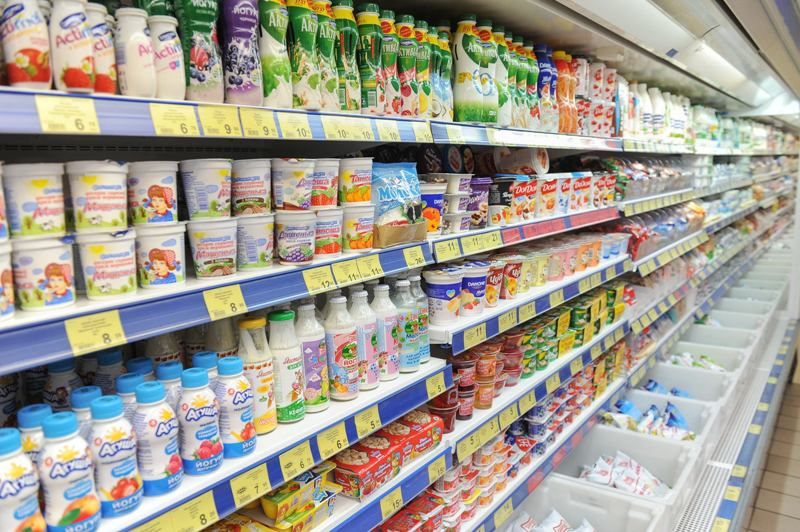
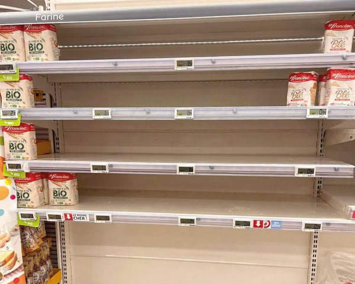
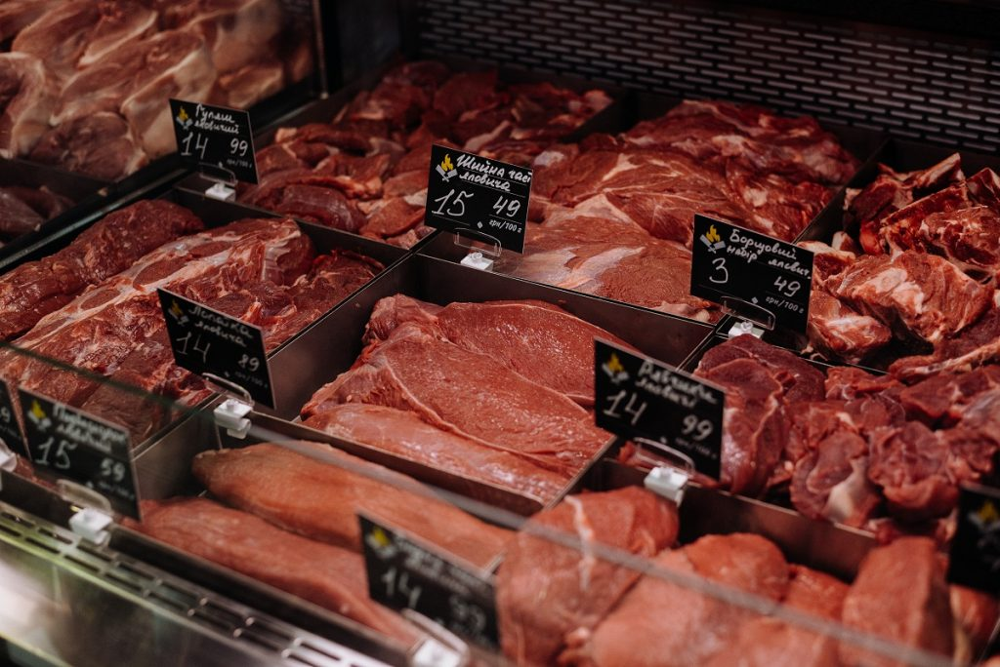
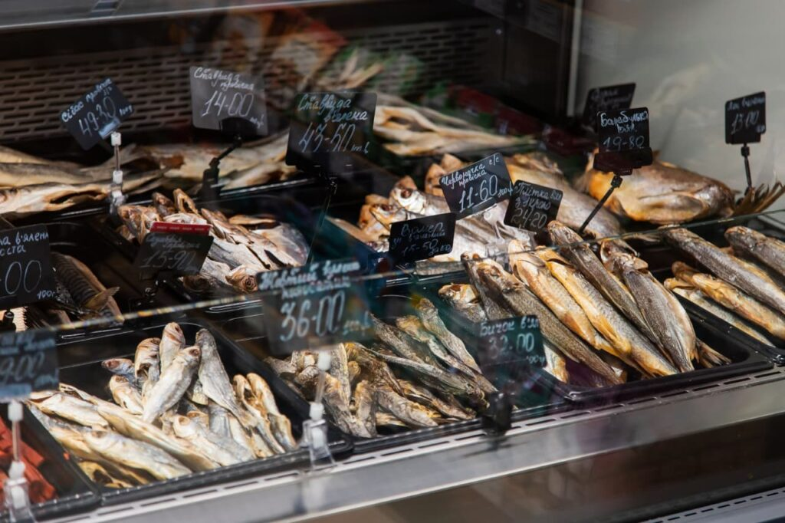

Споживай розумно

Цукерки Roshen
20$-35$ ну максимум 50$
Цукерки Roshen – це дуже смачні цукерки з кращими складниками та відмінним смаком, які виготовляє український виробник. Продукція доступна у таких видах як пряні, з хлібом, з сіллю, крем-шоколад, печиво з карамеллю та фундуком. Зараз цукерки Roshen доступні у більшості магазинів в Україні, а також в Інтернеті, але якщо вам більш до смаку свіжі товари, а не доісторичної давнини тоді краще купувати у нас зі знижкою.

Фрукти та овочі
120$
АТБ пропонує широкий асортимент свіжих фруктів, включаючи яблука, апельсини, груші, банани та інші. Всі товари проходять сувору інспекцію якості, щоб гарантувати клієнтам свіжість фруктів. Ми пропонуємо широкий вибір фруктів із різних сортів та самих різних країн, а також продаємо суміші різних фруктів за одну вигідну ціну. А ще нам фотограф винен кілограм персиків.

Кисломолочні товари
360$/hour
Кисломолочні товари – це харчові продукти, приготовлені з молока або йогурту. Є різні види: білий фарш з кисло-солодким смаком, сливки та кефіри, йогурти, сир і пюре. Вони зараховуються до досить добре знайомих та популярних харчових продуктів, використовуваних для підтримки доброї поглиненості. Вони можуть бути використані як приготування будь-яких блюд і як самостійне приготування. Вони також можуть бути додані до салатів, тостів, страв та інших блюд.

Різні крупи
Якщо знайдете то 200$
Наш магазин пропонує широкий асортимент круп, які можна замовити прямо зараз і отримати цікаві та добрі рецепти. У нашій колекції круп ви знайдете ячмінь, гречку, пшеницю, кукурудзу, барбарис та багато інших. Наша продукція проходить комплексну якісну перевірку і гарантує надійність та високий смак. Завжди будемо раді запропонувати Вам продукти високої якості по найкращим цінам.

М'ясні товари
150$
У нас ви знайдете свіже м'ясо з будь-яких тварин, наприклад говядину, баранину, птицю, кабана та інші. У нас також є ковбаси преміум-якості, шинка, підприємницькі ковбаси та інші м'ясні продукти. У нас Ви зможете купити м'ясо з гарантією якості, а також знайдете широкий асортимент за різними цінами.

Рибні товари
130$
Ми пропонуємо різні види риби від свіжих морських риб до акваріумних. Всі продукти ретельно перевірені, щоб відповідати вимогам наших клієнтів. Для зручності ми постійно працюємо над нашим вибором та постачанням, щоб пропонувати якісні продукти за доступну ціну.